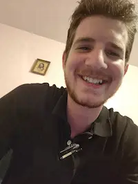

Joseph Anderson | WDD 130

Howdy y'all!! My name is Joseph Anderson and I am from Eagle Mountain, Utah. I've lived here for about 17 years now and have enjoyed every minute of it. I am the fourth kid of six which makes for crazy times at family gatherings. Half of my siblings are married and the other half are not, I'm in the half that aren't. I served my mission in The Houston Texas Mission and got back in October of 2020. I did serve during Covid, at least the first part of it. Which all in all was a unique experience. My favorite color is steamed broccoli green. I came to love that color after steaming broccoli for a previous job and falling in love with how vibrant of a color it is. Recently I decided to do a career change and decided to head into the tech/programming industry.